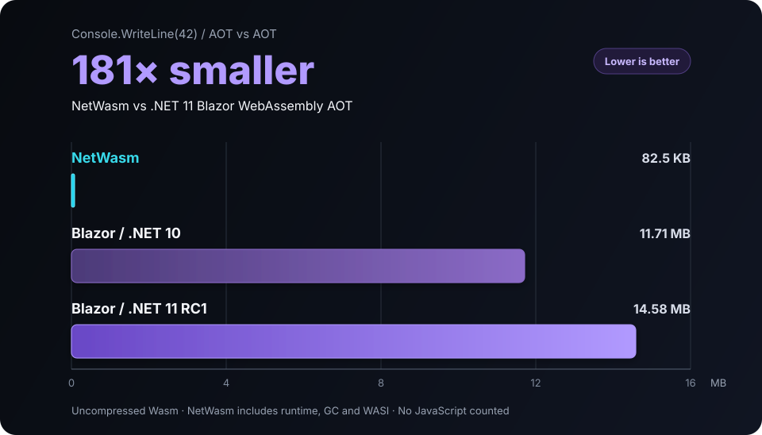

01 / CLOSED WORLD
Unused means gone.
Only reachable code, data, generics, and imports survive. An unused package reference does not become deployment baggage.
Independent .NET. Built outside Microsoft.
NetWasm compiles C# and .NET CIL into small, standalone WebAssembly modules and WASI Preview 2 components. A clean NetWasm 0.7.0 Release build of Console.WriteLine(42) is 55,825 bytes, with the runtime and precise GC included.
Live Playground · No account · Your browser does the compiling
C# 15 · 5 development hosts: Linux x64 and ARM64 · macOS ARM64 · Windows x64 and ARM64
FINAL COMPONENT
55,825
bytes
NO CLR.
NO MONO RUNTIME.
NO dotnet.js.
NO APP DLLs.
NetWasm 0.7.0
Compact is a size-first, precise, non-moving mark-and-sweep collector with finalizers, resurrection, weak references, dependent handles, and pinning. It reduces the qualified complete component from 84,653 to 55,825 bytes.
The qualified Console.WriteLine(42) Release component includes the application, runtime, Compact GC, and WASI component wrapper.
Boehm remains selectable for workloads that benefit from its allocation paths. Both collectors use precise managed roots.
Reproduce both builds ↗ 0.7Compact is selected for new wasm32 and wasm64 application builds. Class libraries remain collector-neutral.
Read the 0.7.0 notes ↗AOT vs AOT
A NetWasm 0.7.0 Release build of Console.WriteLine(42) is 54.5 KiB. The same source compiled with .NET 11 RC1 Blazor WebAssembly AOT is 14.58 MiB, or 274 times larger.

Uncompressed Wasm. Binary units: 1 KiB = 1,024 bytes and 1 MiB = 1,024 KiB. NetWasm 0.7.0 selects Compact by default; the retained Boehm build is 84,653 bytes. These are different deployment stacks, not equivalent UI frameworks. Reproduce the comparison
An independent .NET again
Mono is now part of Microsoft. NetWasm brings back an ambitious .NET implementation built independently, in public, by one developer: compiler, CoreLib, runtime, precise GC, SDK, WASI host, browser toolchain, libraries, and test integration. JetBrains gave Kotlin a portable Wasm platform. This is C#’s answer.
The runtime tax is optional
Roslyn produces CIL. NetWasm compiles the reachable program directly to Wasm, specializes its generics, and links only the runtime support it actually uses. The component is the program.
AOT without the traps
NetWasm works out what your program needs at compile time. JSON, Regex, dependency injection, and structured logging generate ordinary code the compiler can see, so your app does not break because somebody forgot a “do not trim this constructor” annotation three libraries away.
Try the generated-code examplesVISIBLE TO THE COMPILER
✓ Reachability decided at compile time
Smaller by design
NetWasm starts with a smaller platform contract: closed-world compilation, precise GC, and explicit host capabilities. It does not drag desktop assumptions into every deployment.
01 / CLOSED WORLD
Only reachable code, data, generics, and imports survive. An unused package reference does not become deployment baggage.
02 / C# 15
C# 15, generics, exceptions, async, managed memory, and precise garbage collection compile into the final artifact.
03 / WASI
Programs receive the clocks, HTTP, files, and host interfaces you choose, not ambient access to the machine.
04 / BOTH ADDRESS WIDTHS
Ship portable wasm32 WASI Preview 2 Components, or target raw wasm32 and wasm64 core modules for advanced hosts.
Not a toy compiler
Build, run, publish, test, and reuse focused libraries with the commands you already know.
dotnet build·dotnet run·dotnet publish·dotnet test
LINQ and Async LINQ, Memory, Pipelines, Web Encodings, HTTP, Regex, JSON, XML, Hashing, reflection-free dependency injection, Options, and structured logging.
Explore libraries ↗ TRun TUnit through ordinary dotnet test, with source-generated discovery and a NetWasm runner.
Edit C#, compile it locally, run the result, compare optimization settings, and download the component.
Try it now, no install ↗ .*Regex Storm runs locally in your browser from 316 KB of Brotli-compressed Wasm. Test .NET regular expressions, captures, replacements, and splitting without sending patterns or input to a server. The figure excludes JavaScript, HTML, and other page assets.
Open Regex Storm ↗Individuals using it personally and non-commercially, education, qualifying open-source work, and qualifying organizations may use NetWasm tooling at no charge. Open-source community work qualifies when the project's complete source uses an OSI-approved license and the work is not a paid or proprietary deliverable. A qualifying organization is not a government entity, has fewer than 250 employees across its affiliates, and has consolidated annual revenue below US$10 million. It may use NetWasm for commercial development and production builds, then sell, host, deploy, and distribute unlimited generated applications and output. OEM use and compilation services require a separate agreement.
Read the Community License →Local quickstart
Install .NET SDK 10.0.303 or newer, create an app, run it locally, and publish a standalone component. Use the .NET 11 SDK when your source uses C# 15.
Five supported development hosts: Linux x64, Linux ARM64, macOS ARM64, Windows x64, and Windows ARM64. NuGet downloads the pinned host tools on first restore and reuses them on later builds. No separate Emscripten, Node.js, Python, Git, LLVM, or Binaryen setup is needed.
Read the full quickstart ↗$ dotnet new install NetWasm.Templates@0.7.0
$ dotnet new netwasm-app -n HelloNetWasm
$ cd HelloNetWasm
$ dotnet run
42
$ dotnet publish -c Release -o publish/localStop reading. Compile something.
The Playground runs the compiler in your browser. Start with the C# 15 tour, then try FluentValidation, JSON, Regex, dependency injection, generated logging, XML, HTTP, LINQ, hashing, or TUnit.
NetWasm is pre-1.0, so its API and ABI can evolve. The current profile deliberately excludes runtime reflection, dynamic, runtime assembly loading, managed threading, general managed file APIs, raw sockets, and subprocesses.